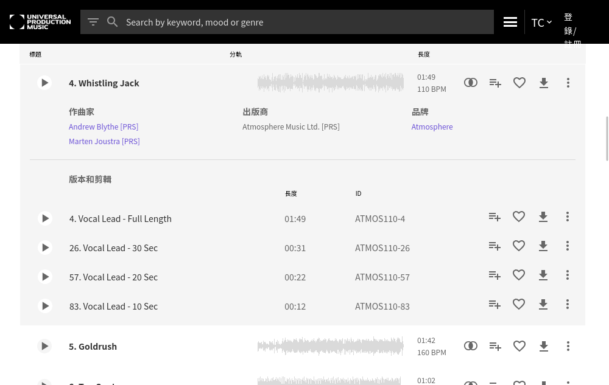

圖書館音樂研究所
音樂圖書館
使用公司
音樂圖書館
/
Atmosphere
/
ATMOS110 - Kidz Stuff
/ Whistling Jack
Whistling Jack - Andrew Timothy Blythe & Marten Andrew Joustra

YOYO FUN輕鬆 第01集
YOYO FUN輕鬆 第02集
YOYO嘻遊記 第01季 第06集 宜蘭
YOYO嘻遊記 第01季 第09集 桃園大溪
YOYO嘻遊記 第01季 第10集 新竹
YOYO嘻遊記 第01季 第12集 新竹 內灣
YOYO嘻遊記 第01季 第13集 新北市 平溪
YOYO小狀元 第1季 第07集 花農
大頭小狀元 第3季 第01集 神奇裁縫師
水果冰淇淋 小怪獸 毛球
黑蕉FUN輕鬆 第03集 豬腳麵線vs生日蛋糕